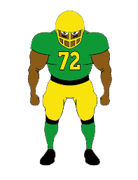
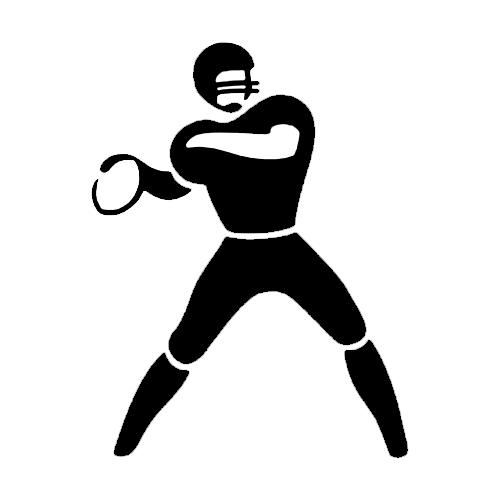

The offense’s primary
job, as a team, is to move the ball down the field and
score either by
touchdown or
kicking a field goal.
There are other ways to score as well, but those are
primarily left to
special teams. Within the
offense, the functions are divided among these key
positions:
QB = quarterback: The
leader of the team. He
calls the plays in the
huddle, yells the signals
at the line of scrimmage,
and then receives the ball from the center. Then he
hands off the ball to a running back, throws it to a
receiver, or runs with
it.
C = center: The player who
snaps the ball to the
quarterback. He handles
the ball on every play.
RB = running back: A player who
runs with the football.
Running backs also are referred to as
tailbacks, halfbacks, and wingbacks
FB = fullback: A player who’s responsible for
blocking for the running
back and also for
pass-blocking to protect
the quarterback.
Fullbacks, who are
generally bigger than
running backs, are short-yardage runners.
WR = wide receiver: A player who uses his
speed and quickness to
elude defenders and catch the football. Teams use as
many as
two to four wide receivers
on every play.
TE = tight end: A player who
serves as a receiver and
also as a blocker. This player lines up beside the
offensive tackle to the
right or the left of the quarterback.
LG and RG = left guard and right guard: The
inner two members of the
offensive line, whose jobs are to block for and
protect the quarterback
and ball carriers.
LT and RT = left tackle and right tackle: The
outer two members of the
offensive line.

DEFENSIVE
The defense’s
primary job, as a team,
is to keep the offense from scoring by
tackling members of the offense, intercepting the ball, and generally preventing the
offense from moving the ball close enough to their goal
to create a scoring opportunity. Within the defense, the
functions are divided among these key positions:
DT = defensive tackle: The
inner two members of the
defensive line, whose jobs are to maintain their
positions in order to stop a running play or to
run through a gap in the
offensive line to pressure the quarterback or disrupt
the backfield formation.
DE = defensive end: The
outer two members of the
defensive line. Generally, their jobs are to overcome
offensive blocking and to meet in the backfield, where
they combine to
tackle the quarterback or ball carrier. On running plays to
the outside, they’re responsible for forcing the ball
carrier either out of bounds or toward (into) the
pursuit of their defensive teammates.
LB = linebacker: The players who line up behind
the defensive linemen and
generally are regarded as the team’s best tacklers.
Depending on the formation, most teams employ either
three or four linebackers
on every play. Linebackers often have the dual role of
defending the run and the pass.
S = safety: The players who line up the
deepest in the secondary
— the last line of defense. There are free
safeties and strong safeties, and they must defend the deep pass and also the run.
CB = cornerback: The players who line up on the
wide parts of the field,
generally opposite the offensive receivers.

SPECIAL TEAM UNITS
Special Teams(ST) are called onto the field when a team
performs any
kick or return in
football. Without a good special team, a football team
will
struggle to gain points
through kicking opportunities like field goals and extra
points or prevent turnovers with punts.
Kickers: They are also known as
placekickers. These are
the players that are responsible for
field goals and extra points.
They kick the football off the ground in order to earn
more points for their team. Although this player might
not be involved in much of the game, he can make or
break the result of the game.
Holders: They are the players that
receive the ball and hold
it on the ground for kickers to kick. If they
fumble with the ball, it
could result in a missed field goal or kicker completely
missing the ball altogether.
Punt: They are responsible for
dropping the ball and
kicking it very far to the other end of the field. This
happens when the offensive team wishes to
switch possession and
give it to the other team instead of trying for fourth
down.
Gunner: Someone who
'guns' down the field to
try to tackle the returner. They are usually positioned
on the sidelines and are
especially fast runners.
Snapper: The player who
'snaps' the ball to the
holder during the
extra points or field goal kicks. He must have
extreme accuracy and precision
which comes with lots of practice.